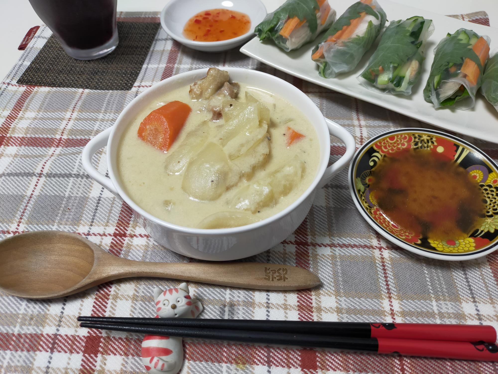

ルー不使用！特急ホワイトシチュー
材料・金額
| 材料 | 購入金額 | 使用量 | 金額 | kcal |
|---|---|---|---|---|
| 鶏もも肉1枚 | 348 | 300g | 348 | 600 |
| 玉ねぎ4個入 | 214 | 1個 | 54 | 56 |
| にんじん3本 | 160 | 1本半230g | 80 | 86 |
| じゃがいも8個入 | 214 | 2個 | 54 | 80 |
| 強力粉 | - | 大3 | - | - |
| 牛乳500cc | 135 | 500cc | 135 | 320 |
| 顆粒コンソメ | - | 大1 | - | - |
| ローリエ | - | 1枚 | - | - |
| バター450g | 900 | 10g | 20 | 77 |
| 塩・こしょう | - | 適宜 | - | - |
| 合計 | - | - | 691 | 1,219 |
| 1食分（合計×0.25） | - | - | 173 | 305 |
作り方
- 鶏ももを皮目を下にして、フライパンに広げ、中火にかける
- 玉ねぎ、にんじん、じゃがいもを一口大に切る
- 鶏ももの皮目が焼けてきたら、裏返し、周囲に玉ねぎを入れる
- 鶏ももに8割方火がとおったらフライパンの上でキッチンバサミで一口大に切る
- 強力粉大3を入れ、ざっと炒め合わせ、粉っぽさが無くなったら、にんじん、じゃがいもを入れて炒め合わせる
- 牛乳を少しずつ全量入れ、グツっとしたら顆粒コンソメ大1、ローリエ1枚、バター10gを入れ、じゃがいもが柔らかくなるまで煮る
- 塩・こしょうで味をととのえてできあがり
振り返り
とても久々にレシピをあげられました。なんだかんだと忙しい日々です。